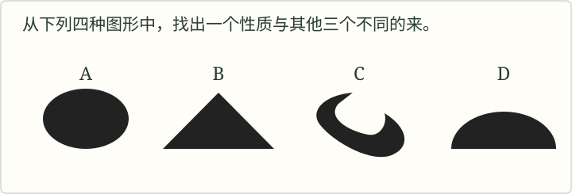

教材文本 · 论述类文本阅读
谈创造性思维
文章倡导从不同角度寻求解决问题的方法，指出知识积累、活用、尝试、自信与持续发展微小创意的重要性。
导读
文体与题材：议论性文章；创造性思维。
作者简介：罗迦·费·因格，美国实业家。
文本出处：《中外母语教材选粹》，江苏教育出版社，2000年，郭常义、胡晓卫译；原题《事物的正确答案不止一个》，有改动。
内容脉络：从四种图形引出答案受观察标准影响的认识，继而讨论创造性思维的条件，以发明事例说明知识的重组，再讨论自信与微小灵感。
内容主旨：文章倡导从不同角度寻求解决问题的方法，指出知识积累、活用、尝试、自信与持续发展微小创意的重要性。
阅读重点：区分知识储备与知识运用，考察图形例题的判别标准及例证与论点的关系。
原文与随文研读
原文按结构分节；随文内容可定位至对应段落。
引入：四种图形可按不同性质分类，说明观察标准影响答案。
问题：从下列四种图形中，找出一个性质与其他三个不同的来。

对上面这个问题，你是怎么回答的呢？你若选择的是B，那就恭喜你答对了。因为图形B是唯一一个仅由直线构成的图形。
不过，也许有人会选择图形C。由于非对称性图形只有C一个，所以C会被认为与其他图形不同。确实如此，这也是正确答案。答A也是可以的。因为A是唯一没有角的图形，所以A也是正确答案。那么，D又怎么样呢？这是唯一一个由直线与曲线构成的图形，因此D也是正确答案。换句话说，由于看图形的角度不同，四种答案全都正确。
“正确答案只有一个”这种思维模式，在我们头脑中已不知不觉地根深蒂固。事实上，若是某种数学问题的话，说正确答案只有一个是对的。麻烦的是，生活中大部分事物并不像某种数学问题那样。生活中解决问题的方法并非只有一个，而是多种多样。由于情况的变化，原来行之有效的方法，到了现在往往不灵了。正因为如此，如果你认为正确答案只有一个的话，当你找到某个答案以后，就会止步不前。因此，不满足于一个答案，不放弃探求，这一点非常重要。
批注 1
答案与标准
由于看图形的角度不同四种答案分别采用线条、对称性和角等性质作为区分标准。判别标准改变，所选对象也相应改变。
条件：知识提供素材，重组运用与持续尝试使新创意成为成果。
可以说，寻求第二种答案，或是解决问题的其他路径和新的方法，有赖于创造性的思维。那么，创造性的思维必须具备哪些条件呢？
有人是这样回答的：“富有创造力的人总是孜孜不倦地汲取知识，使自己学识渊博。从古代史到现代技术，从数学到插花，不精通各种知识就一事无成。因为这些知识随时都可能进行组合，形成新的创意。这种情况可能出现在6分钟之后，也可能在6个月之后，或者6年之后。但当事人坚信它一定会出现。”
我对此完全赞同。知识是形成新创意的素材。但这并不是说，光凭知识就能拥有创造力。发挥创造力的真正关键，在于如何运用知识。创造性的思维，必须有探求新事物并为此而活用知识的态度和意识。在此基础上，持之以恒地进行各种尝试。
这方面的典型代表，首推谷登堡。他将原来毫不相关的两种机械——葡萄压榨机和硬币打制器组合起来，开发了一种新机械。因为葡萄压榨机用来从葡萄中榨出汁，所以它在大面积上均等加力；而硬币打制器的功能则是在金币之类的小平面上打出印花来。有一天，谷登堡半开玩笑地自言自语道：“是不是可以给几个硬币打制器加上葡萄压榨机的压力，使它在纸上打印出印花来呢？”由此发明了印刷机和排版术。
信念：由自信及关注微小想法说明普通人也能发展创造力。
不过，这种创造性的思维是否任何人都具备呢？是否存在富有创造力的人和缺乏创造力的人的区别呢？
认为“我不具有创造力”的人当中，有的觉得创造力仅仅是贝多芬、爱因斯坦、莎士比亚他们的，从而进行自我压制。不言而喻，在创造的宇宙里，这些人是光辉灿烂的明星。然而在大多数情况下，即便是他们，也并非轻而易举就能获得如此非凡的灵感。相反，这种非凡的灵感，往往产生于这样的过程：关注极其普通，甚至一闪念的想法，并对它反复推敲，逐渐充实。
注释 · 批注 · 札记 · 评议 5
不言而喻
不言而喻不用说就可以明白。喻，明白。
微小创意的后续
留意自己细小的想法“留意”只是开始，紧接着的推敲、充实和坚持将其推进为可实践的想法，结尾据此归纳行动要求。
反复推敲意味着对初念作检验和修订，逐渐充实则为其增加内容与实现条件。留意小想法应当落实为发展念头的工作，既愿意投入，也观察尝试的结果；创造的起点和完成之间由这些持续行动连接。
结论主动保留多因
主要根据之一主要将自我留意置于重要位置，之一又承认并非唯一。它和前文知识、运用、尝试相接，使创造力不能压成单一心理宣告；自信的作用在于让小想法进入持续发展过程。
未知结果与坚持为何并存
即使他们不知道将来会产生怎样的结果未知指具体结果未定，坚持指继续试验的行动态度，二者并不矛盾。可为一次小创意列出待检问题和下一步尝试，检验相信价值是否真的转为可修正、可发展的实践。
归纳：汇合好奇、积累、探求、自信与坚持等实践要求。
任何人都拥有创造力，首先要坚信这一点。关键是要经常保持好奇心，不断积累知识；不满足于一个答案，而去探求新思路，去运用所得的知识；一旦产生小的灵感，相信它的价值，并锲而不舍地把它发展下去。如果能做到这些，你一定会成为一个富有创造力的人。
研读题
结合原文及篇章关系回答，说明判断所依据的语句。
第1题 · 图形与论点
开头图形问题的几种答案，怎样引出全文的议论？
参考答案1展开 / 收起
参考作答
- 不同标准产生不同分类：按线条、对称性和有无角等标准，A、B、C、D各可成为与其余不同的一项。
- 从解题转到思维态度：作者由寻找第二种答案转入新路径、新方法，再提出创造性思维的条件。
审题与考查点
开头图形问题的几种答案，怎样引出全文的议论？
文本分析
不同标准产生不同分类查看证据 ↗
文本依据：“唯一一个仅由直线构成的图形”；“由于看图形的角度不同，四种答案全都正确”。
题面未预先限定同一种性质，判断随所选标准而变；作者由此展示转换观察角度的必要。
从解题转到思维态度查看证据 ↗
文本依据：“不满足于一个答案，不放弃探求”；“有赖于创造性的思维”。
具体问题先引起参与，再产生关于思维习惯的认识，后文据此讨论知识运用和持续探求。
知识点
解题方法
逐一写出各答案采用的分类标准，再说明作者把这一例子引向什么普遍问题。
易误辨析
判断答案须先明确标准；标准已被题目限定的情形需依题意作答。
答案组织与检核
写出图例的具体认识和它引入全文的作用。
第2题 · 创造的条件
作者怎样说明知识积累、自信与持续尝试之间的关系？
参考答案2展开 / 收起
参考作答
- 知识经运用形成新意：知识提供素材，探求新事物的态度和活用能力促成新组合，谷登堡的例子说明机械功能可以重组。
- 信念支持细小想法的发展：相信自己能创造，才能留意细小想法，并通过推敲、充实、坚持把它发展下去。
审题与考查点
作者怎样说明知识积累、自信与持续尝试之间的关系？
文本分析
知识经运用形成新意查看证据 ↗
文本依据：“知识是形成新创意的素材”；“葡萄压榨机和硬币打制器”。
从已有知识到新成果之间还存在联想和试验，知识在实践中转化为创意。
信念支持细小想法的发展查看证据 ↗
文本依据：“留意自己细小的想法”；“锲而不舍地把它发展下去”。
自信维持尝试的主动性，持续加工使偶发念头获得内容，结尾把这些要求综合提出。
知识点
解题方法
区别素材、运用、信念与实践各自的作用，再按创意形成的过程说明联系。
易误辨析
“有知识”与“产生创造性成果”之间，需要说明运用和尝试环节。
答案组织与检核
每点包含条件及其作用，最后形成连贯关系。
篇目与册次
研习拓展
研习题1 · 调查能推出什么
第11段的调查是否足以单独证明“只要相信自己就必有创造力”？结合后文限制说明。
讨论参考1展开 / 收起
参考作答
- 调查显示相伴：调查比较既有的两类人，发现创造表现与相信自己有创造力相伴，能够支持重视自我评价；材料却未说明只改变自信便一定能产生创造成果。
- 主张还含行动：后文把灵感形成落实为关注普通念头、反复推敲与逐渐充实，表明自信还需进入持续工作；创造从念头走向成果并非一次信念宣告即可完成。
审题与考查点
区别相伴关系、充分条件与后续行动要求。
文本分析
调查显示相伴查看证据 ↗
调查按现存表现分组，报告各组如何看自己，没有交代控制其他因素的干预过程。相关现象可以引出思考，不能单独承担必然因果的证明。
主张还含行动查看证据 ↗
过程后列出一串主动动作，反复与逐渐又给出持续时间。它们为主张增加实践条件，因而只要相信自己就必有成果删去了文章写明的行动环节。
知识点
归纳概括是从若干具体材料中提炼共同性质或一般判断的推理活动。材料的数量、差异、代表性和反例情况，共同影响概括的可信程度。
解题方法
先按调查实际比较对象表述结果，再圈主张中的只要、必，核对是否额外增加。
易误辨析
不能从不充分直接否认自信价值，须指出它怎样与其他条件配合。
答案组织与检核
答案须限制单独充分因果，同时据后文说明行动中介。
参考文献
- 《中外母语教材选粹》，江苏教育出版社，2000年，郭常义、胡晓卫译；原题《事物的正确答案不止一个》，有改动。
- 选自《中外母语教材选粹》（江苏教育出版社2000年版）。郭常义、胡晓丁译，原题为《事物的正确答案不止一个》。有改动。罗迦·费·因格，美国实业家。
- 教育部组织编写：《义务教育教科书·语文九年级上册》，人民教育出版社，统编版（2024年修订前版），第103页。
相关不能独自保证因果
富于创造力的人，认为自己具有创造力这组调查说明职业或创造表现与自我认识相伴出现，却没有单独排除训练、环境等因素。本文鼓励自信还依靠后续具体行动；把调查缩成只要自称有创造力就能创造，会加强到材料未独立支持的程度。